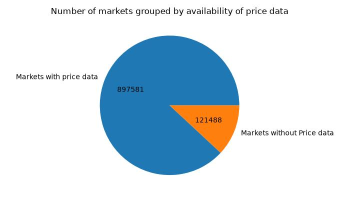

Analysis
This section is divided into two distinct parts:
- Preprocessing / Pruning to drop irrelevant data and reduce the computational workload
- Correlation Analysis to find interesting market movements following a social media post by Trump
Limitations of our analysis are described here.
Preprocessing / Pruning
We dropped several market topics for various reasons. For some topics the assigned markets mainly fall into the category of trivial bets. For example the topic "weather_disasters" consists of 36919 markets of the form "Will the highest temperature in [place] be [temp] by [date]", and only 1985 others. In this case the tweets matched to the same topic are overwhelmingly not actually about the market's topic, so any correlation analysis would be meaningless.
The complete list of topics dropped with reason for dropping:
| Dropped Topic | Reason |
|---|---|
| uncertain | the embedded market could not be decisively matched with any topic |
| esports_gaming | not a topic Trump tweets about, or can reasonably be expected to influence associated markets |
| sports | not a topic Trump tweets about, or can reasonably be expected to influence associated markets |
| financial_updown | trivial bets on crypto/stock movements, markets too short and volatile for any reasonable analysis |
| elections_foreign | category too broad, lack of relevant Trump tweets |
| stats_counting | bets on statistics of YouTube video views in time X, number of tweets from X by date Y. Not relevant to Trump |
| mentions_speech | large scale mislabelling |
| weather_disasters | overwhelmingly trivial bets unrelated to Trump |
Additionally, markets were dropped during the analysis if they didn't have any associated price data available, no matching social media posts could be found or the market was only open for a short time. Our cut-off for minimum market duration is 12 hours.
Finally there were some markets for which we did not have any price data:

Correlation Analysis
To determine if the market movements after a social media post by Trump are significantly different from the market's usual development we employed the sliding window method.
For each market it computes a secondary graph which shows by how much the market has changed, akin to the first derivative of a mathematical function in 2D space.
For each valid position of the window we get the points intersecting the left and right window boundaries and compute the slope of the line connecting them. The outcome is a graph of size N - window-size which can be queried for how drastically the market changed at any time point X to X + window-size. (where N is the duration for which the market was open).
Choosing the window size is a compromise between smoothing out short-term market movements and losing any information they may have contained. We settled on 6 hours; this filters out most jitter from the markets while still being short enough to catch if Trump changes his mind on something from morning to afternoon (and the market actually moves because of it).
Based on the 6-hour window-size we chose the cut-off for minimum market duration to be twice the window-size, at 12 hours.
Trump's social media posts are then narrowed down to the ones matching the market's topic and time frame. For these a p value is derived using the mean and standard deviation from the sliding window methods output. A significance cut-off of p ≤ 0.05 is used to filter for statistically significant market movements.
Be aware that this uses the assumption that basically “all big data” converges on the normal distribution, this abstraction may lose some information about our data, but is more than good enough to differentiate statistical anomalies from the norm.